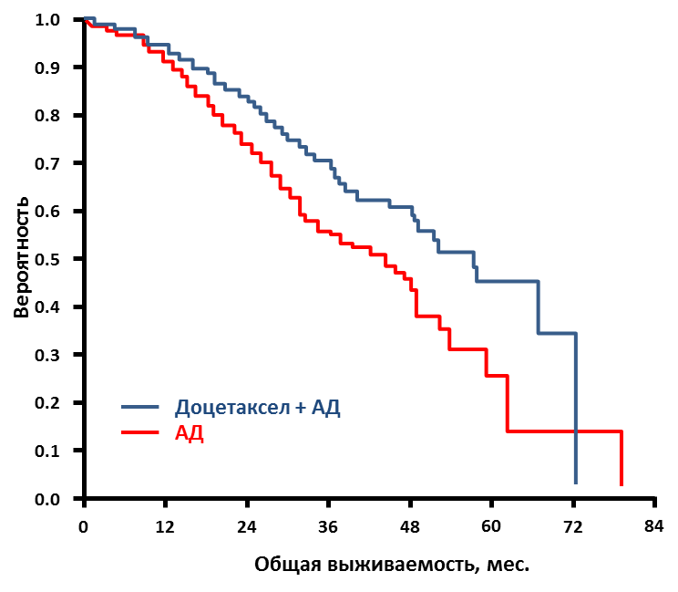

Присоединение химиотерапии к гормональной терапии улучшает выживаемость у мужчин с впервые выявленным метастатическим раком предстательной железы.
Результаты исследования III фазы показали, что назначение химиотерапии (ХТ) одновременно с гормональной терапией (ГТ) у мужчин с впервые выявленным гормон-чувствительным раком предстательной железы (РПЖ) увеличивает общую выживаемость (ОВ) пациентов более чем на 13 месяцев по сравнению с применением только ГТ. Преимущество ОВ было выше у пациентов с большим объемом заболевания.
Доктор Christopher Sweeney, MBBS, из Dana-Farber Cancer Institute, Бостон, США, представил на Пленарном заседании 50-й ежегодной конференции Американского общества клинической онкологии (ASCO) результаты рандомизированного клинического исследования CHAARTED, в котором сравнивалось применение андрогенной депривации (АД) в монорежиме и в комбинации с химиотерапией (доцетаксел 75 мг/м2 каждые 3 нед. до 6 циклов в первые 4 мес. начала АД) в первой линии лечения у мужчин с распространенным РПЖ. В период с июля 2006 г. по ноябрь 2012 г. было рандомизировано 790 пациентов (397 пациентов в группе доцетаксела + АД и 393 пациента в группе АД). При подтвержденном прогрессировании заболевания врач-исследователь мог назначить ХТ. При включении в КИ пациенты были стратифицированы в зависимости от распространенности заболевания: с большим объемом поражения (БОП – при наличии висцеральных и/или ?4 костных метастазов) и с малым объемом поражения (МОП).
Исходно в исследование планировалось включать только пациентов с БОП, но из-за медленного набора была выпущена поправка к протоколу, позволяющая включение пациентов и с МОП. Основным оцениваемым показателем была ОВ, дополнительными оцениваемыми показателями были время до прогрессирования и время до развития клинических симптомов.
По состоянию на январь 2014 г., медиана наблюдения равнялась 29 мес., зарегистрировано 104 летальных исхода в группе доцетаксела + АД и 137 летальных исходов в группе АД.
Рис. 1. Общая выживаемость больных, получавших доцетаксел + АД и АД в рамках исследования CHAARTED

Группы были схожими по основным характеристикам. В обеих группах больных БОП был диагностирован у 2/3 пациентов. Медиана возраста больных составила 63 года (от 36 до 91). Приблизительно 75% мужчин в каждой группе ранее не получали локального лечения (радикальной простатэктомии и/или лучевой терапии).
В группе доцетаксела + АД медиана ОВ была достоверно большей, чем в группе АД – 57,5 мес. против 44,0 мес. соответственно (ОР 0,61; 95% ДИ [0,47-0,80]; p = 0,0003) (рис. 1).
В подгруппе мужчин с БОП медиана ОВ была 49,2 мес. в группе доцетаксела + АД и 32,2 мес. в группе АД (ОР 0,60; 95% ДИ [0,45-0,81]; р = 0,0006). У мужчин с МОП медиана ОВ на момент анализа данных не была достигнута.
Во всех проанализированных подгруппах добавление доцетаксела к АД улучшало результаты лечения. Медиана времени до развития клинических симптомов заболевания была значимо больше в группе доцетаксела + АД (32,7 мес.) по сравнению с группой АД (19,8 мес.; ОР 0,49; 95% ДИ [0,37-0,65]; р < 0,0001). В то же время, медиана времени до развития кастрационно-резистентного РПЖ составила 20,7 мес. в группе доцетаксела + АД по сравнению с 14,7 мес. при монотерапии АД (ОР 0,56; 95% ДИ [0,44-0,70]; р < 0,0001).
В группе комбинированного лечения у 6% мужчин наблюдалась фебрильная нейтропения; у 1% сенсорная и у 1% моторная нейропатия; кроме того зарегистрирован 1 летальный исход, обусловленный лечением. В группе монотерапии АД летальных исходов, обусловленных лечением, не было.
Обсуждение ®
По мнению доктора Michael J. Morris из Memorial Sloan Kettering Cancer Center, США, данная работа показала преимущество одновременного назначения ХТ и ЭТ у пациентов с кастрационно-чувствительным метастатическим РПЖ с большим опухолевым поражением. Результаты этого исследования продемонстрировали, что применение доцетаксела оправдано не только при кастрационно-резистентных формах РПЖ, когда пациенты не отвечают на гормонотерапию, но и при кастрационно-чувствительном РПЖ, при этом показатели выживаемости увеличиваются с 2-3 мес. до 13,6 мес.
Как отметил доктор Morris, ранее при использовании других лечебных подходов у пациентов с БОП наблюдали увеличение ОВ не более чем на 1/3, столь же значительное улучшение результатов лечения наблюдается впервые. В популяции больных с МОП разница между двумя группами лечения была слишком мала, чтобы считать это тенденцией. Необходимы дальнейшие наблюдения у пациентов с МОП.
Хотя пациенты с метастатическим РПЖ составляют лишь 4,2% от общего числа больных РПЖ, представленные результаты исследования кажутся очень значимыми, так как позволяют изменить подход к лечению этой популяции.
ASCO 2014, LBA2